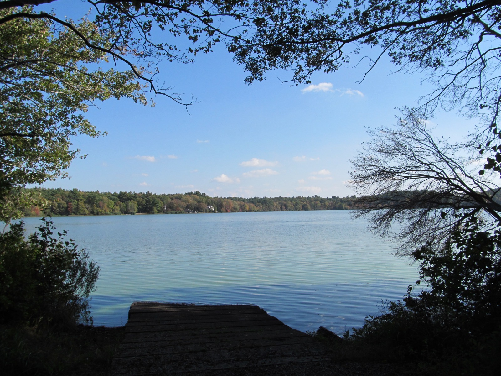
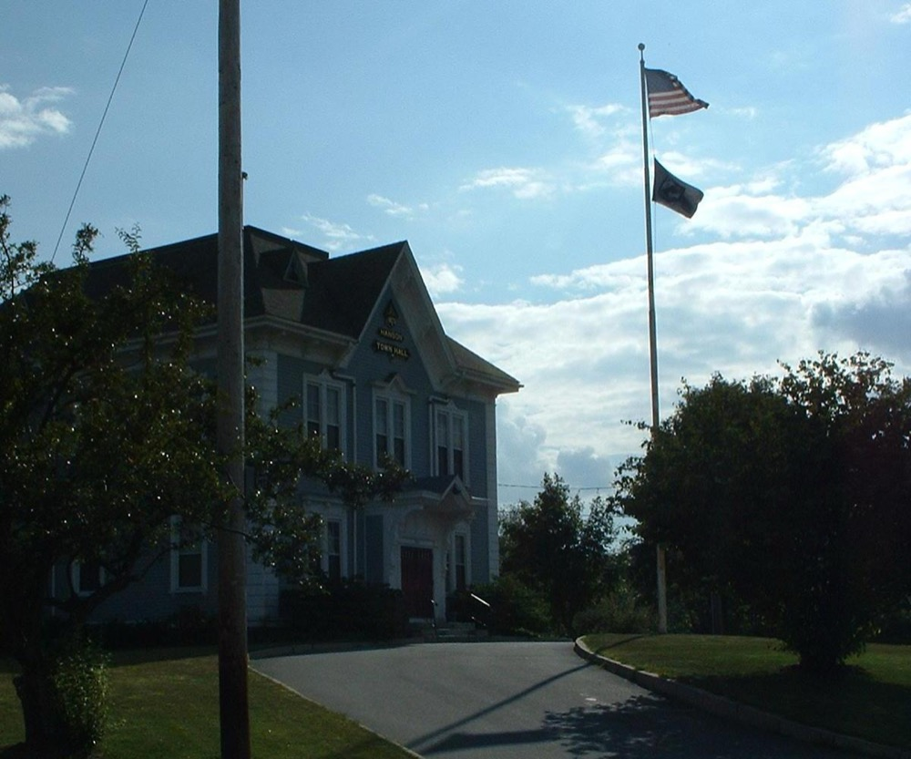

Independent community water quality initiative
We track EPA and MassDEP testing data for the Hanson Water Department's Crystal Spring well system and help neighbors make sense of it — in plain language, sourced from public records.
Hanson draws its drinking water almost entirely from four wells at the Crystal Spring Well Field off Main Street, with a single backup interconnection to the Brockton Water Department (surface water from Silver Lake) used only when needed. That makes Hanson's water quality story less about industrial contamination and more about what groundwater naturally carries: minerals.
MassDEP's own Source Water Assessment found Hanson's wellfield sits in an aquifer with high vulnerability to contamination — there's no confining clay layer to slow anything moving down from the surface. The groundwater is also naturally corrosive, which is why it's treated with sodium hydroxide before it reaches your tap.
| Substance | Recent level | Guideline |
|---|---|---|
| Manganese | 407–549 ppb (Nov 2025–May 2026) | 50 ppb (EPA secondary/aesthetic) |
| Sodium | 35.6 ppm | 20 ppm (MassDEP ORSG guideline) |
| PFOA | 2.58 ppt | 4 ppt (federal individual limit) |
| PFOS | 2.47 ppt | 4 ppt (federal individual limit) |
Source: Hanson Water Department 2023–2024 Consumer Confidence Reports; MassDEP monitoring data via EWG's Tap Water Database. See the full breakdown on the Water data page.


Hanson Water Watch is a volunteer-run initiative started by residents who wanted a plain-language, independent source for what public testing actually shows about the town's well water — separate from the Water Department's own reporting.
We read the Consumer Confidence Reports so you don't have to, track new MassDEP and EPA data as it's published, and help neighbors figure out whether manganese, sodium, or anything else showing up in the numbers should change what they do at home.
Request a free in-home water test and a volunteer will follow up to walk through what your results mean.
Get a free water test